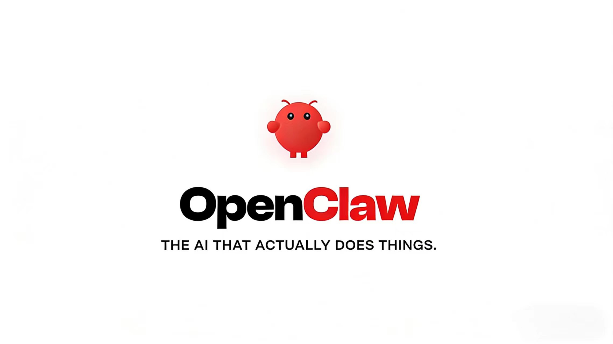
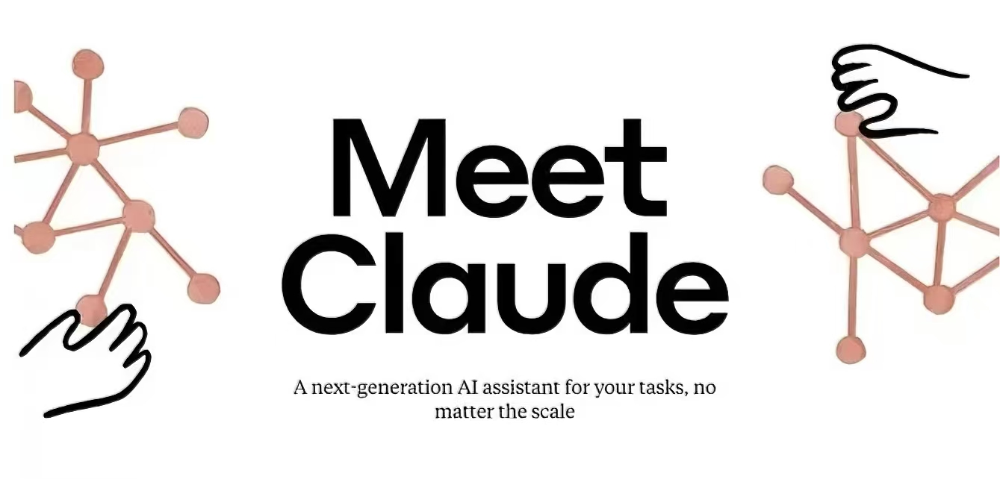
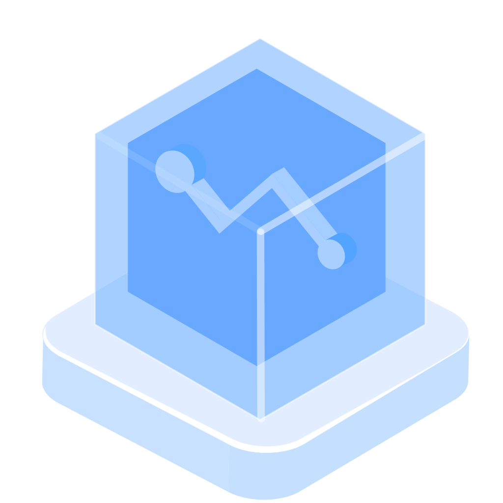
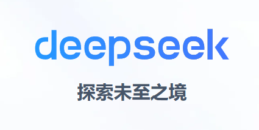
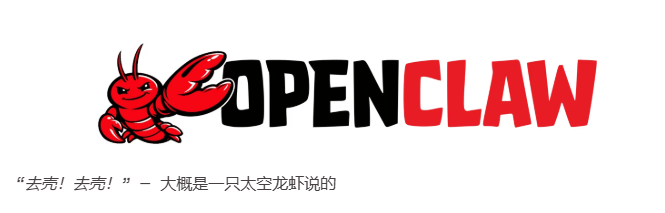
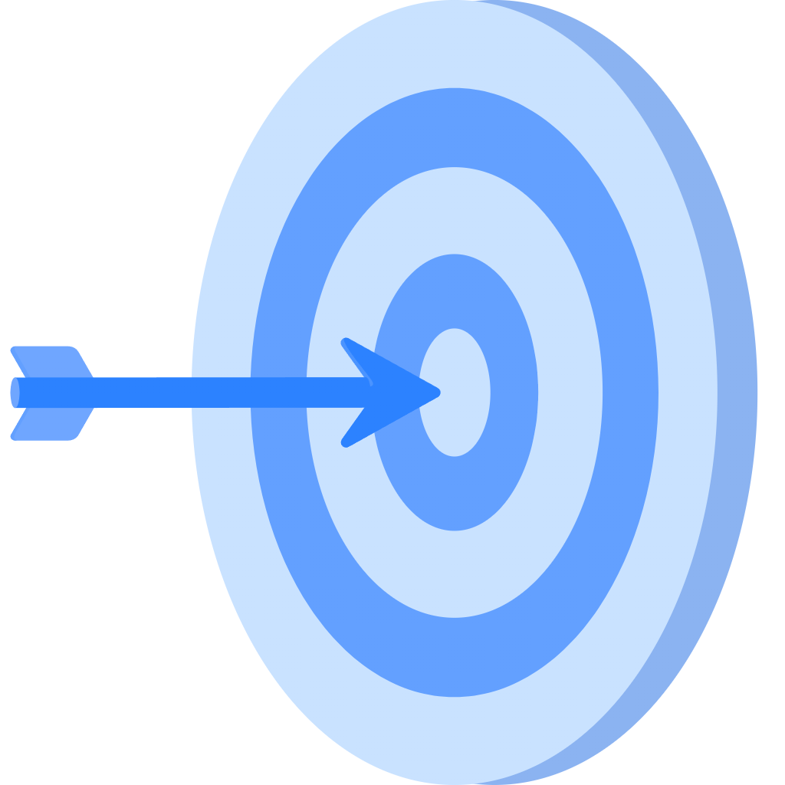
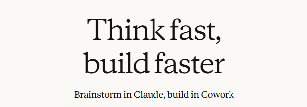
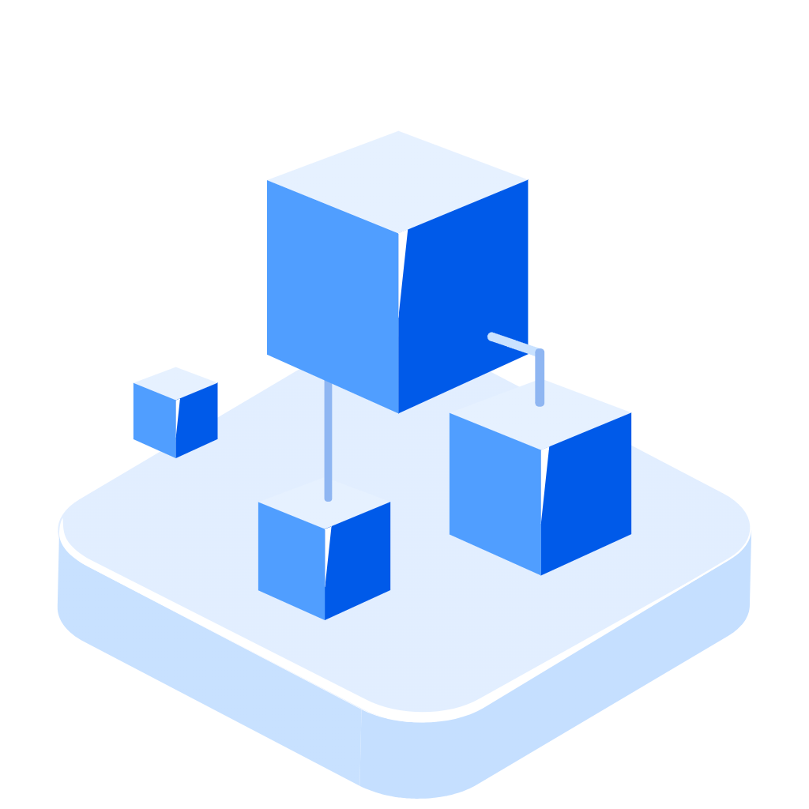

DeepSeek、OpenClaw、Claude 三类大模型各有所长，覆盖不同应用场景。DeepSeek 专攻文本处理，助力内容生成与信息分析。
OpenClaw 可将语言指令转化为实操动作，赋能办公与设备控制；Claude 聚焦编码领域，高效完成代码编写与调试。
三者协同，正从文本、操作、开发多维度推动智能应用落地。
DeepSeek 是中国深度求索团队研发的预训练语言模型，主打 “轻量参数 + 卓越性能”，摆脱对大算力的依赖。它核心聚焦文本处理，能实现内容生成、信息检索、语义分析等功能，支持从云端到边缘端的全场景部署。应用覆盖企业智能客服、金融投研报告撰写、教育解题辅助等领域，还可通过私有化部署保障数据安全，是兼顾通用性与垂直领域适配性的文字智能工具。
OpenClaw 是开源的具身智能框架，核心定位是 “数字员工”，打破传统 AI “只说不做” 的局限。它通过 “视觉 - 语言 - 动作” 联合建模，将自然语言指令转化为实际操作，可连接各类系统工具与通讯渠道。支持本地部署与多模型适配，技能生态覆盖办公自动化、文件管理、机器人控制等场景，能 7×24 小时完成跨平台任务协同，无需编程基础即可实现低代码自动化，大幅提升个人与团队工作效率。
Claude 是 Anthropic 公司推出的专注编码领域的大模型，以 Claude 4 系列为代表，在复杂代码生成与调试上表现突出。它支持多编程语言开发，能无缝集成 VS Code 等主流 IDE，实现结对编程、代码重构、跨文件复杂更改等功能。凭借领先的代码准确率与长时间任务处理能力，广泛应用于软件开发、智能体构建、DevOps 自动化等场景，无论是新手开发者的代码辅助，还是专业团队的项目攻坚，都能显著降低开发成本、提升交付效率。
鼠标悬停查看详情

AI大模型综合应用
AI 大模型是基于海量数据训练的 “超级智慧大脑”，以数十亿甚至万亿级参数构建核心架构，能像人类一样理解、推理并完成多元任务。它先通过 “预训练” 吸收互联网海量知识，再经 “微调” 适配特定场景，最终实现跨领域通用能力。 如今大模型已渗透生活与产业：聊天问答、文案代码生成、图文创作等日常场景中，它是高效助手；企业办公、智能客服、科研加速等领域里，它成降本增效利器。2026 年技术更趋成熟，正从 “懂语言” 迈向 “懂世界”，通过多模态融合、具身智能等方向，在物理世界与数字空间同步创造价值，成为推动智能化变革的核心引擎。

鼠标悬停查看详情
Deepseek
作为国产轻量化预训练语言模型的代表，DeepSeek 由深度求索团队打造，以低算力消耗实现比肩重量级模型的文本处理能力。它能精准理解并生成各类文本，胜任信息提炼、文案创作、智能问答等多元任务，支持灵活的云端与本地部署模式，在企业服务、学术研究、日常办公等场景中，为用户提供高效且安全的文字智能解决方案。
查看详情
鼠标悬停查看详情

OpenClaw
OpenClaw（别称 “小龙虾”，曾用名 ClawdBot、Moltbot）是一款开源本地 AI 智能体，由 Peter Steinberger 开发。它兼容 GPT、Claude、通义千问等主流大模型，可在 Windows、macOS、Linux 本地部署，数据全留存本地、隐私可控。 不同于传统聊天 AI，它能直接操控设备：读写文件、执行脚本、控制浏览器、跨通讯工具（微信、飞书、Telegram）自动办公。通过技能市场扩展能力，可自主分解并执行任务，是能 “动手干活” 的数字助手
查看详情
鼠标悬停查看详情

Claude
Claude 是由Anthropic 公司（前 OpenAI 团队创立）开发的 AI 大模型系列，以安全可信、超长文本、强推理为核心优势。它采用 “宪法 AI” 训练，输出严谨合规、幻觉更少。 Claude 支持20 万至 100 万 token上下文，可一次性分析整本书、长篇 PDF 与代码库。擅长文档总结、代码编写、多模态理解（图表、截图）。从入门级 Haiku 到旗舰 Opus，覆盖日常助手到专业科研场景，是金融、法律、技术领域的高效安全助手。
查看详情